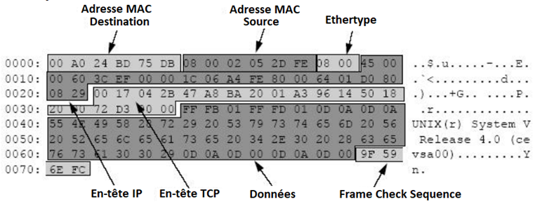

Transmission de données dans un réseau et protocoles de communication
Corrigés des activités faites en classe :
Les modèle OSI et TCP/IP
Pour que des machines communiquent sur un réseau, c’est-à-dire se transmettent des informations, il ne suffit pas qu’elles parlent un langage commun, il faut aussi qu’elles partagent des règles d'émission et de réception des données représentant ces informations. C'est le rôle des protocoles.
.
Cours
L'ensemble des règles qui permettent à deux machines de communiquer sur un réseau s'appelle un protocole.
Afin de s'y retrouver au milieu des protocoles réseaux, les modèles OSI et TCP/IP permettent de les regrouper selon leurs niveaux d'abstraction, dans ce qu'on appelle des « couches réseaux » :
- Le modèle OSI (de l'anglais Open Systems Interconnection) comporte sept couches.
- Le modèle TCP/IP, plus simple, comporte quatre couches : Accès au Réseau, Internet, Transport et Application.


La commande ipconfig permet d’afficher la configuration réseau d’une machine.
Couche « Accès au Réseau »
Cours
L’adresse MAC (Media Access Control), parfois nommée adresse physique, est un identifiant stocké dans une carte ou interface réseau donné par le constructeur. Elle est unique au monde.
Une adresse MAC est constituée de 6 octets écrits sous forme hexadécimale, chacun séparé par " : ", par exemple 1B:22:62:47:33:D7. Si une machine possède deux cartes d’interface réseau, par exemple une carte Ethernet et une carte Wi-Fi, alors elle aura deux adresses MAC.
L’adresse MAC est utilisée au niveau de la couche « Accès au Réseau » du modèle TCP/IP (ou des couches « 1.Physique » et « 2.Liaison de données » du modèle OSI). En pratique, on la manipule rarement quand on s'intéresse à un réseau.


Cours
Le protocole ARP (Address Resolution Protocol) fait la correspondance entre les adresses MAC (couche « Accès au Réseau » du modèle TCP/IP) et les adresses IP (couche « Internet »).
La commande arp permet de visualiser la table de correspondance entre les adresses MAC et IP.
Couche « Internet »
On peut créer un réseau avec plusieurs machines (ordinateurs, téléphones, réfrigérateurs connectés, voitures connectés, consoles de jeu,…) en les reliant entre elles physiquement par câble Ethernet ou Wi-Fi, etc. à travers un hub ou un switch :
-
Un hub (ou concentrateur) est le matériel réseau le plus basique qui opère au niveau de la couche « 1.Physique » du modèle OSI. Il est utilisé pour un réseau local avec un nombre très limité de machines. Il n'est ni plus ni moins qu'une « multiprise RJ45 » qui envoie les données reçues sur tous ses ports.
-
Un switch (ou commutateur) est un appareil "intelligent" qui opère au niveau de la couche « 2.Liaison de données» du modèle OSI. Il apprend l'adresse MAC de chaque appareil connecté et dirige les données uniquement vers le destinataire prévu.
Cours
Le protocole IP (Internet Protocol) est chargé d’acheminer au mieux les paquets de données d’une machine à une autre. Il permet d’identifier les machines sur le réseau grâce à leur adresse IP. Une adresse IP est unique sur ce réseau.
Actuellement deux versions du protocole IP sont utilisées: IPv4 sur 32 bits et IPv6 sur 128 bits.
| Version | IPv4 | IPv6 |
|---|---|---|
| Description | C’est la version encore la plus utilisée mais avec seulement 32 bits, le nombre d’adresses disponibles (\(2^{32}\) ≈ 4 milliards) n’est plus suffisant par rapport aux besoins du monde actuel. | Elle remplace progressivement la version IPv4, avec 128 bits, le nombre d'adresses disponibles est de \(2^{128}\), c’est-à-dire \(3,4 \times 10^{38}\) adresses, ce protocole semble donc inépuisable. |
| Adresse IP | 4 nombres décimaux compris entre 0 et 255 (8 bits) séparés par des points. | 8 nombres hexadécimaux, compris entre 0000 et ffff (16 bits), écrits avec des chiffres et les lettres de « a » à « f », séparés par des deux-points (:). |
| Exemple | 172.16.254.1 | 2001:0db8:3c4d:0015:0000:0000:1a2f:1a2b |
L’adresse IP est utilisée au niveau de la couche « Internet » du modèle TCP/IP (ou couche « 3.Réseau » du modèle OSI).


La commande ping permet de tester l’accessibilité d’une autre machine à travers un réseau IP.
Pour pouvoir communiquer, les deux ordinateurs doivent appartenir à un même réseau. C’est le masque qui détermine à quel réseau une adresse IP appartient :
- Les octets 255 du masque désignent la partie de l’adresse IP qui identifie réseau.
-
Les octets 0 du masque désignent la partie la partie de l’adresse IP qui identifie une machine sur le réseau.
Avec un masque de 255.255.255.0, les ordinateurs qui ont des adresses IP commençant par les 3 mêmes premiers octets appartiennent au même réseau :
-
192.168.1.1, 192.168.1.2 et 192.168.1.10 s’écrivent sous la forme par 192.168.1.xxx. Ils appartiennent au même réseau, nommé 192.168.1.0
-
192.168.2.10 ne commence pas par 192.168.1.xxx, il appartient à un réseau différent, nommé 192.168.2.0. Il ne peut donc pas communiquer directement avec les ordinateurs du premier réseau.
La première adresse de la plage d’adresses désigne le réseau lui-même; et la dernière est l’adresse de diffusion (ou broadcast) qui permet d’envoyer un message à toutes les machines sur ce réseau , elles ne sont pas utilisées pour une machine. On a donc \(2^8 - 2 = 254\) adresses machines disponibles pour toutes les machines sur ce réseau.
Par contre lorsqu’on change le masque de 192.168.1.1 et 192.168.2.10 en 255.255.0.0, les deux ordinateurs dont les adresses commencent par les mêmes 2 premiers octets appartiennent à un même réseau, nommé 192.168.0.01. Ils peuvent alors communiquer directement entre eux.
```
Réseau -> | <- Machines
Adresse IP : 192 . 168 . 1 . 1
Masque : 255 . 255 . 0 . 0
Adresse réseau : 192 . 168 . 0 . 0
```
Une autre notation souvent utilisée est la notation CIDR (Classless Inter-Domain Routing) qui consiste à noter directement le nombre de bits significatifs en décimal*. L’adresse IP 192.168.1.1/255.255.255.0 peut écrire 192.168.1.1/24, pour indiquer que la partie réseau de l’adresse est de 24 bits.
Couche « Transport »
Cours
Le protocole TCP (Transmission Control Protocol), permet d’établir une connexion entre deux machines afin d’échanger des données. Les données sont découpées en « petits » paquets pour ne pas encombrer les réseaux, et éviter de renvoyer la totalité des données quand il y a une erreur.
Pour ce faire, TCP joue plusieurs rôles : découper des données en paquets, numéroter les paquets ; envoyer les paquets les uns après les autres ; vérifier que tous les paquets sont arrivés ; redemander les paquets manquants et remettre les paquets dans l’ordre.
Avec TCP, l’ouverture de la connexion TCP entre deux machines se fait en trois étapes, appelées three-way handshake, qui correspondent à l’échange de trois paquets SYN, SYN-ACK et ACK sont échangés.
Exemple d'une connexion TCP entre un ordinateur client et un serveur :
| 1. SYN (synchronized) | 2.SYN-ACK (synchronize, acknowledge) | 3.ACK (acknowledge) |
|---|---|---|
| Le client envoie un paquet SYN au serveur de demande de connexion Client→Serveur. | Le serveur renvoie un paquet SYN-ACK d’acceptation et demande d'une connexion Serveur→Client. | Le client renvoie au serveur un paquet ACK de confirmation de la connexion Serveur→Client. |
 |
 |
 |
Une fois le three-way handshake effectué, la communication full-duplex est établie entre le client et le serveur.
TCP est un protocole de communication fiable entre applications. Ce n’est pas le seul protocole de la couche Transport. Il existe aussi le protocole UDP (User Datagram Protocol) qui transmet les paquets "sans connexion" (paquets non numérotés, sans renvoi si un paquet est perdu ou corrompu en chemin, etc.). Plus rapide, UDP est surtout utilisé dans les cas où la vitesse prime, par exemple le streaming vidéo.
Pile de protocoles
De nombreuses applications sur internet existent au niveau de la couche application, chacune utilisant des protocoles différents. En voici quelques exemple parmi bien d’autres: le Web avec protocoles HTTP et HTTPS, les emails avec SMTP, POP et IMAP, la visio et le streaming avec RTP, etc.


Pour s’échanger des données sur un réseau, chaque protocole s’appuie sur un protocole de la couche inférieure et lui rajoute des fonctionnalités.
Découpage des données en paquets et encapsulation
Lors d’une transmission, les données traversent chacune des couches au niveau de la machine émettrice. À chaque couche, une information est ajoutée au paquet de données, il s’agit d’un entête, ensemble d’informations qui garantit la transmission. Au niveau de la machine réceptrice, lors du passage dans chaque couche, l’en-tête est lu, puis supprimé. Ainsi à la réception, le message est dans son état originel.

Cours
Chaque protocole rajoute des informations supplémentaires aux informations qu’il transmet. C’est l’encapsulation.

-
un fragment de donnée est encapsulé dans un paquet TCP qui ajoute un no de paquet et les ports d’origine et de destination pour identifier l’application ;
-
ce paquet est lui-même encapsulé dans un paquet IP, qui ajoute les adresses IP d’origine et du destinataire, ainsi qu’un compteur TTL (Time To Live) ;
-
ce dernier étant alors envoyé via un protocole de la couche de liaison (par exemple Ethernet ou 4G) qui ajoute des informations supplémentaires.
Même si on utilise souvent le terme « paquet » pour toutes les couches du modèle, il change d’aspect ainsi l’appellation change aussi suivant les couches. On parle de message au niveau de la couche application ; de segment au niveau de la couche transport ; de paquet au niveau de la couche réseau ; de trame au niveau de la couche liaison ; et de signal au niveau de la couche physique.
Un exemple de trame Ethernet : 
Connecter plusieurs réseaux avec un routeur
On a vu que des machines qui n'appartiennent pas au même réseau (déterminé par le masque) ne peuvent pas communiquer directement. Pour qu'elles communiquent, il faut connecter les réseaux entre eux avec un routeur.
Cours
Les routeurs sont des équipements informatiques dont le rôle est de relayer (on dit « commuter ») les paquets d’un réseau à un autre en suivant le protocole IP. Les paquets sont transmis de routeur en routeur jusqu’à ce qu’ils arrivent à leur destinataire final. C’est le routage.
À la maison, la box Internet joue le rôle de routeur en connectant le réseau local à l’Internet.
Cours
Dans un réseau, la passerelle (ou gateway en anglais) est l’adresse du point de sortie qui transmet les paquets vers l’extérieur du réseau, par exemple d’un réseau local vers l’Internet. Sans passerelle, les appareils peuvent communiquer entre eux, mais pas avec l’extérieur.
À la maison, la passerelle est l’adresse IP de la box qui relie le réseau local à l’Internet.
Couche « Application »
DNS
Les adresses IP sont trop difficiles à retenir pour un humain, à la place on utilise des noms de domaines sous forme d’URL (Uniform Resource Locator), tels que https://www.wikipedia.org. Ces URL doivent alors être converties en adresse IP pour être reconnues par le protocole IP : c’est le rôle du DNS.
Cours
Le DNS, pour Domain Name System (Système de noms de domaine en français) permet de traduire un nom de domaine ou URL en adresse IP (on dit aussi « résoudre »), comme un annuaire téléphonique permet d'associer un numéro de téléphone à un nom d'abonné.
En pratique, sur Internet, un seul serveur DNS ne peut pas connaître toutes les adresses IP. Pour trouver une adresse IP, le serveur DNS, dit « récursif » doit interroger plusieurs autres serveurs DNS jusqu’à trouver celui qui connaît l’URL recherchée. Ce serveur DNS récursif peut se trouver chez le fournisseur d’accès à Internet (FAI) ou sur le réseau local d’une entreprise ou d’une école, ou encore être un serveur DNS public (Google DNS : 188.8.8.8, Cloudflare : 1.1.1.1, etc.).
Prenons l’exemple d’un utilisateur qui accède depuis son navigateur à l’URL fictive https://www.nsi.gouv.fr :


- Le navigateur (un client) demande à son serveur DNS récursif l’adresse IP de www.nsi.gouv.fr.
- Le serveur DNS récursif ne connaît pas www.nsi.gouv.fr, il interroge un serveur DNS “racine“ qui lui indique les adresses d’autres serveurs DNS couvrant les noms de domaine en “.fr”.
- Le serveur DNS récursif interroge alors un serveur DNS “.fr” qui ne connaît pas non plus www.nsi.gouv.fr, il lui indique d’autres serveurs DNS couvrant les noms de domaines en “.gouv.fr”.
- Le serveur DNS récursif interroge finalement un serveur DNS “.gouv.fr” qui lui connaît www.nsi.gouv.fr et peut indiquer son adresse IP pour la donner au navigateur.
- La connexion TCP peut s’établir entre le navigateur et le serveur web qui héberge www.nsi.gouv.fr. Les échanges HTTPS peuvent commencer.
Cours
Sur Internet, un serveur DNS récursif permet de résoudre l'adresse IP d'une URL en interrogeant plusieurs serveurs DNS. Les URL sont découpées en « zone » à partir d'un serveur « racine » en domaines de premier niveau (Top Level Domain) comme .fr, .com, .org, etc., puis en sous-domaines.
Échanges de données sur le Web
Cours
Le protocole HTTP (HyperText Transfer Protocol) gère les échanges entre un client (un navigateur) et un serveur web.HTTPS est sa version sécurisée qui permet de chiffrer les échanges.
Différents types de requêtes HTTP (ou HTTPS en version sécurisée) permettent d’obtenir un fichier ou une ressource depuis un serveur web en lui transmettant des informations :
-
La méthode GET est la méthode la plus utilisée, elle transmet des informations au serveur par l’URL. Exemple : www.example.com/register.php?name=jean&age=15. Cette méthode est donc limitée par la taille limite d’une URL et les données sont accessibles à tous.
-
La méthode POST transmet des informations dans le corps de la requête http elle-même. Les paramètres ne sont pas visibles pour les utilisateurs et la taille est illimitée, mais les données saisies sont perdues quand la page web est mise à jour (par exemple en cliquant sur « Précédent »). Néanmoins si les données ne sont plus visibles dans l’URL, elles sont toujours transmises en clair et peuvent être vues par quelqu’un qui arrive à intercepter une trame (sur un routeur par exemple). D’où l’importance d’utiliser des protocoles sécurisés comme HTTPS, les transmissions sont alors cryptées.
-
Les 65 534 (\(= 2^{16} - 2\)) adresses comprises entre 192.168.0.0 (adresse du réseau) et 192.168.255.255 (adresse broadcast) sont sur ce même réseau. ↩